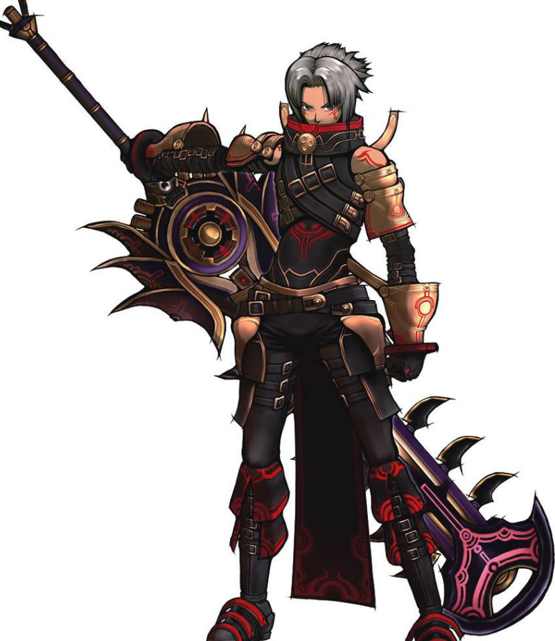
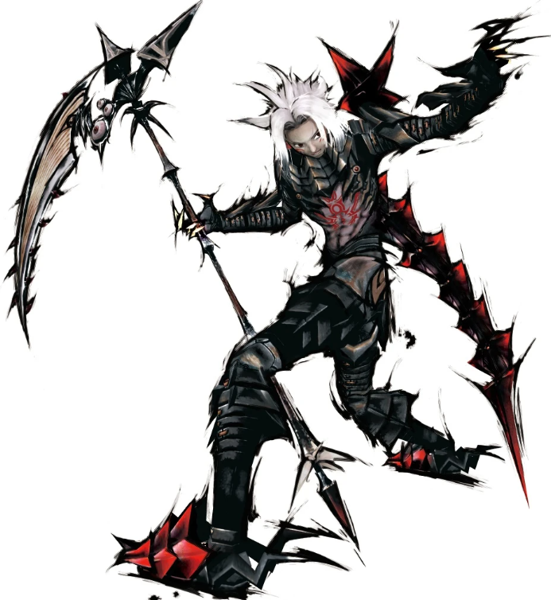
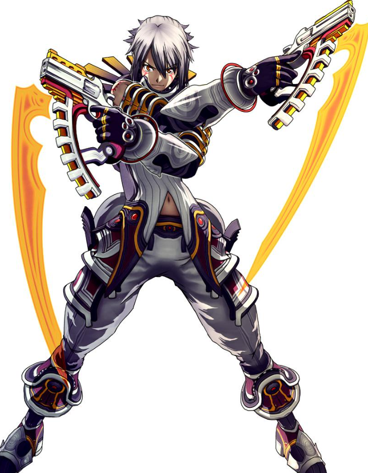

.hack//G.U.
Um MMORPG renascido das cinzas. Um jogador em busca de vingança. Um vírus que faz pessoas reais caírem em coma. Esta é a lenda de Haseo, The Terror of Death.
The World R:2
Em 2017, um incêndio na sede da CC Corp e o fracasso do plano "Restore Aura" destruíram mais de 80% dos dados de The World, o jogo online mais popular do planeta.
Com o que restou, nasceu The World R:2: um mundo sem lei, dominado por player killers e assombrado pela AIDA, uma anomalia que infecta personagens e deixa seus jogadores em coma no mundo real.

A Trilogia
Três volumes lançados para PlayStation 2 entre 2006 e 2007, remasterizados em 2017 na coletânea Last Recode.

Rebirth
Derrotado por Tri-Edge e reduzido ao nível 1, Haseo recomeça do zero e desperta o poder de Skeith.

Reminisce
A AIDA se espalha, Sakaki trama nas sombras e a verdade sobre Tri-Edge finalmente vem à tona.

Redemption
Haseo enfrenta Ovan, os oito Avatares se unem e o destino de The World é decidido contra Cubia.
Três volumes. Oito Avatares. Uma redenção.